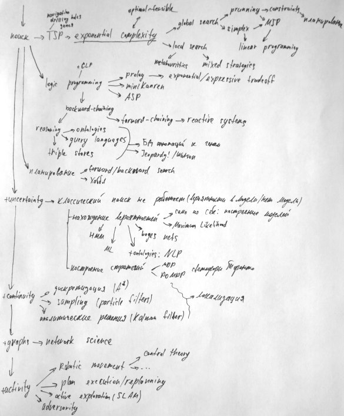
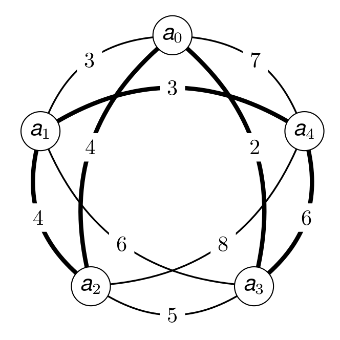
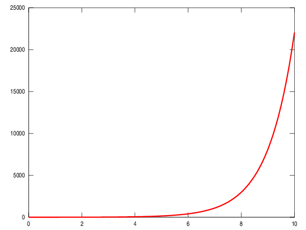
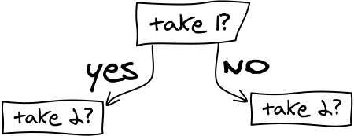
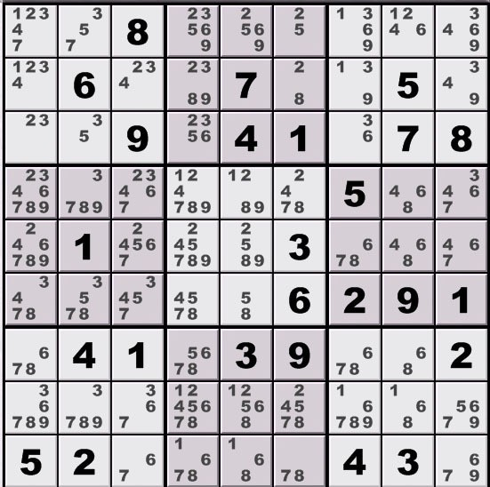
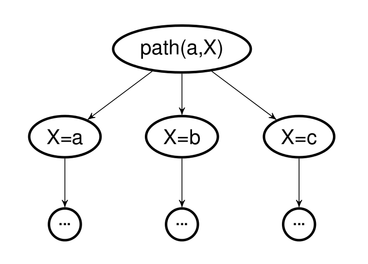

ИИ и мы
Что нам делать с ИИ
Дмитрий Грошев @lambdadmitry
Немного о прогрессе
Каждой задаче свой инструмент
на самом деле нет
Задача → инструмент → задача → …
это — прогресс!
… → инструмент → задача → …
когда-то в будущем
… → инструмент → Ø
если инструментов нет
Две проблемы
- пропасть между индустрией и университетами
- разнообразие инструментов
Индустрия VS academia
Индустрия VS academia
- программисты не имеют инструментов
- учёные не умеют делать инструменты
- в наших силах это исправлять
- индустрия + academia = успех (SV?)
Академический код
if ref[i] == 'A':
if random.random() <= 4/6.0:
ref_A[i]=ref_B[i]='G'
else:
if random.random() <= 0.5:
ref_A[i]=ref_B[i]='C'
else:
ref_A[i]=ref_B[i]='T'
if ref[i] == 'G':
if random.random() <= 4/6.0:
ref_A[i]=ref_B[i]='A'
else:
if random.random() <= 0.5:
ref_A[i]=ref_B[i]='C'
else:
ref_A[i]=ref_B[i]='T'
if ref[i] == 'C':
if random.random() <= 4/6.0:
ref_A[i]=ref_B[i]='T'
else:
if random.random() <= 0.5:
ref_A[i]=ref_B[i]='A'
else:
ref_A[i]=ref_B[i]='G'
if ref[i] == 'T':
if random.random() <= 4/6.0:
ref_A[i]=ref_B[i]='C'
else:
if random.random() <= 0.5:
ref_A[i]=ref_B[i]='A'
else:
ref_A[i]=ref_B[i]='G'
Software engineering
- не менее важен, чем научное содержание
- готовые удобные инструменты помогают другим
- Free as in beer, free as in speech
- положительная обратная связь
- прогресс!
Инструменты
Карта
Поиск
Великий и Ужасный
Задача о коммивояжёре
Задача о коммивояжёре
- навигация
- отверстия в печатной плате
- не-евкдиловы метрики: мутации генома
Задача о рюкзаке

Задача о рюкзаке
- менеджмент склада
- балансировка нагрузки между серверами
- расписание
Судоку

Судоку
- бесполезная
- удобная :)
Простейшее решение
- решение перебором
- перебор = поиск среди допустимых
- O(n!)
- 20! ~ 2E18
- Intel Haswell: ~ 80E9 FLOPS
Проклятие экспоненты
Оптимальность VS допустимость
- допустимое: минимизация конфликтов
- оптимальное: значение целевой функции вводится в ограничения
Дерево поиска
Глобальный поиск
- AKA: exhaustive search
- ключ: отрезание ненужных ветвей
- оценка поддеревьев (branch-and-bound, MIP)
- уменьшение дерева поиска (constraints)
- линейные ограничения и переменные: симплекс!
Симплекс/MIP
- экспоненциальный в теории
- на практике работает удивительно хорошо
- ограничение на целость делает на порядок сложнее
- branch-and-bound
- пример: линейная релаксация задачи о рюкзаке
- линейное программирование и исследование операций
Constraint programming
- явное отслеживание доменов значений
- constraint propagation
- пример: судоку
- constraint programming, планирование, reasoning
CP: пример
Локальный поиск
- hill climbing
- обычно хуже, чем глобальный поиск
- обычно лучше масштабируется
- проклятие локальных максимумов
- допустимость = минимизация конфликтов
Метаэвристики
- отжиг
- муравьи
- генетические алгоритмы
- табу
- LAHC (!)
Смешанные стратегии
- large neighbourhood search
- column generation
- свой вариант
Логическое программирование
- поиск как модель вычислений
- Prolog!
Prolog
mortal(X) :- human(X).
human(socrates).
?- mortal(socrates). % Yes
Backward-chaining
Prolog fail
arc(a, b).
arc(b, a).
arc(b, c).
path(X, Y) :- arc(X, Y).
path(X, Y) :- arc(X, Z), path(Z, Y).
?- path(a, X). % не завершится
ASP
arc(a,b).
arc(b,a).
arc(b,c).
path(X, Y) :- arc(X, Y).
path(X, Y) :- arc(X, Z), path(Z, Y).
reachable(X) :- path(a, X).
#hide.
#show reachable/1.
> clingo3 graph.lp
Answer: 1
reachable(c) reachable(a) reachable(b)
SATISFIABLE
Общее назначение VS логика
- вычислительная модель Prolog'а понятна
- Prolog можно использовать везде
- ASP мощнее логически
- «программировать»* на ASP невозможно
*: задавать последовательность действий
Forward-chaining
- backward: найти факты для гипотезы
- forward: найти гипотезы для фактов
- удивительно мало в свежей академической литературе
- «бизнес-логика», «реактивные/экспертные системы»
Clara
(defrule get-current-temperature
[?current-temp <- newest-temp :from
[TemperatureReading (== ?location location)]]
=>
(insert! (->CurrentTemperature
(:value ?current-temp)
?location)))
(defrule reduce-device-speed
[CurrentTemperature (> value high-threshold)
(== ?location-id location)]
[?device <- Device (== ?location-id location)]
=>
(reduce-speed! ?device))
Немного о знаниях
- большая база фактов + backward-chaining
- удобный язык запросов
- древовидные базы классификаций (онтологии)
- triple store: сущность-свойство-значение
- «интеллектуальные» системы
Аннотация генов
- каждый ген имеет много аннотаций
- каждая аннотация является частью дерева
- «все гены, ответственные за X и активные у детей»
- X может быть родителем реальных аннотаций
(Классическое) планирование
- домен: список возможных действий
- начальное состояние
- конечное состояние (цель)
- простейшее: поиск в пространстве состояний (70е!)
- поиск «от цели» и поиск «от начального состояния»
- поиск в пространстве планов, GraphPlan, POP, HTNs, …
- пример: планирование наблюдений Хабблом
+неуверенность
Неуверенность
- мера неуверенности — вероятность (ура, Баес)
- в модели появляются вероятности
- либо модели не существует
- классический поиск не работает
Нахождение вероятностей: зачем?
- само по себе: получение настоящей модели
- maximum likelihood
Нахождение вероятностей: как?
O ML и так говорят слишком много :)
Планирование с неуверенностью
- «последовательность действий» не работает
- строится стратегия
- неуверенность в исходе действия: MDP
- неуверенность в измерениях: POMDP
- пример: проект светофоров в Торонто
Можно комбинировать!
- вероятности + знания = NLP
- NLP + планирование = «электронный ассистент»
- свой вариант
+континуум
Задача не дискретная!
- управление автомобилем
- AI в шутере
- локализация робота
- компьютерное зрение
Методы
- дискретизация (A*, диаграммы Вороного)
- семплирование (particle filters)
- аналитические решения (Kalman filters)
+графы
Network science
- крайне молодая дисциплина
- изучает процессы на произвольных графах
- например, отношения между людьми
+активность
Активное влияние на мир
- делает всё сложнее
- комбинаторная сложность ещё больше
- движение роботов
- влияние наблюдателя
- наличие активных противников
- кооперация
Движение роботов
- локализация, снова
- диагностика отказов
- активное исследование (например, SLAM)
- контроль исполнения планов
В заключение
Ад разнообразия
- 50 лет развития ИИ
- огромное количество методов
- каждый метод — десятилетия исследований
- интеграция подходов оказывается полезна
- пример: constrained MIP
Смешать по вкусу
- робоавтомобиль: локализация, планирование, CV
- MSL: CV, разноуровневое планирование
- кредитование: ML, планирование, реактивные системы
- свой вариант
Главное: нужны доступные инструменты
Доступность инструментов
- качественный и свободный код
- хорошая документация
- популяризация математических концепций
- пример: OpenCV, R, scikit
Совмещайте науку и инженерию

Спасибо за внимание!
Слайды: si14.github.io/apmath-04-2014-slides
Твиттер: @lambdadmitry
Почта: lambdadmitry@gmail.com